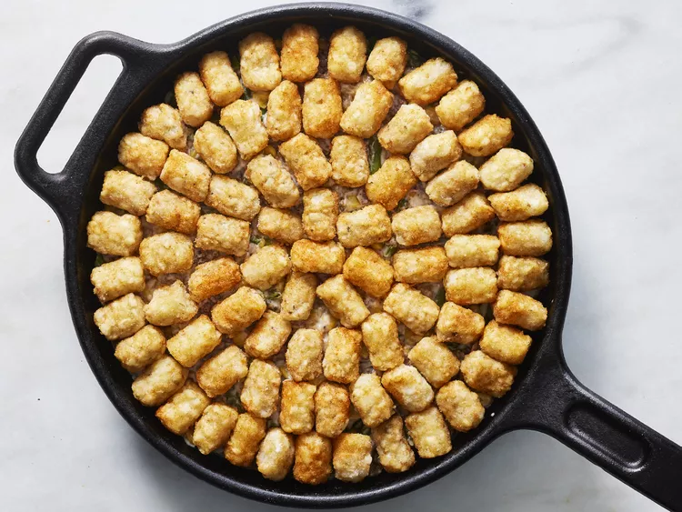

Tater Tot Hotdish Recipe

Description
This Tater Tot Hotdish is a comforting casserole that combines ground beef, onions, cream of mushroom soup, green beans, and sweet corn, topped with crispy tater tots for a hearty, satisfying meal. The dish starts by browning ground beef with onions in a skillet and seasoning it with garlic powder, onion powder, and black pepper, creating a savory base. Cream of mushroom soup adds a creamy, rich layer, while green beans and sweet corn bring a hint of sweetness and texture. The entire mixture is topped with seasoned tater tots, which bake to golden perfection, adding a delightful crunch to every bite.
Baked in the oven until the tater tots are crisp, this casserole is then finished with sharp Cheddar cheese and fresh scallions, giving it a melty, cheesy topping and a pop of freshness. It’s a perfect choice for busy nights, offering a one-dish meal that warms the kitchen and satisfies everyone at the table. Ideal for cold-weather comfort, this Tater Tot Hotdish is easy to make and designed to please a crowd, making it a popular choice for family dinners, gatherings, or potlucks.
Ingredients
- 2 tablespoons olive oil
- 2 cups chopped yellow onion
- 1 pound ground chuck beef (80% lean)
- ½ teaspoon garlic powder
- ½ teaspoon onion powder
- ½ teaspoon black pepper
- 2 (10.5 ounce) cans condensed cream of mushroom soup
- 2 cups frozen cut green beans, thawed
- 2 cups frozen sweet corn, thawed
- 1 ½ pounds frozen tater tots
- ¼ teaspoon seasoned salt (such as Lawry's®)
- ½ cup shredded sharp Cheddar cheese
- 2 small scallions, thinly sliced
Steps
- Preheat the oven to 400 degrees F (200 degrees C)
- Set a large deep cast iron skillet over medium-high heat. Add olive oil and swirl to coat skillet evenly. Add onions to skillet in one even layer; top with ground beef, breaking it up into small pieces. Cook undisturbed until onions are translucent, about 2 minutes. Stir beef and onions until well combined, and cook until beef is cooked through and browned, stirring occasionally, 3 to 4 minutes longer.
- Reduce heat to medium. Season beef with garlic powder, onion powder, and black pepper. Cook, stirring often, for 1 more minute. Remove from heat. Add cream of mushroom soup, green beans, and corn; stir until well combined.
- Toss tater tots and seasoned salt in a bowl to combine. Arrange tater tots decoratively over beef mixture in the skillet, avoiding large gaps between tots.
- Bake in the preheated oven until tater tots are golden and crisp, about 1 hour. Sprinkle with cheese and scallions; cool 10 minutes before serving.